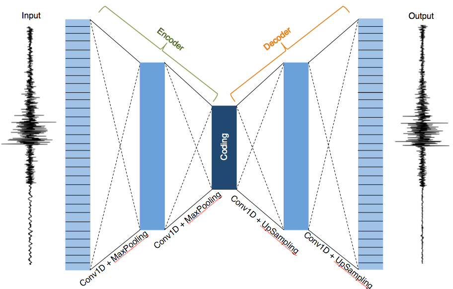
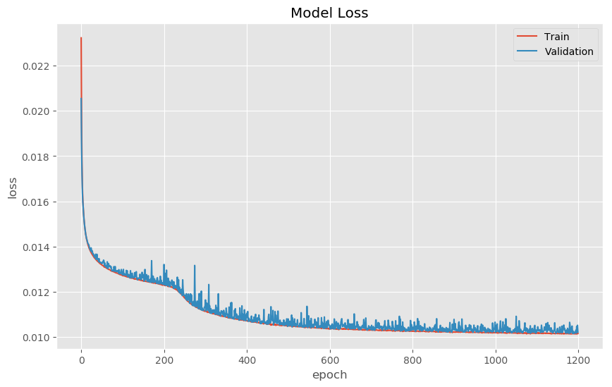
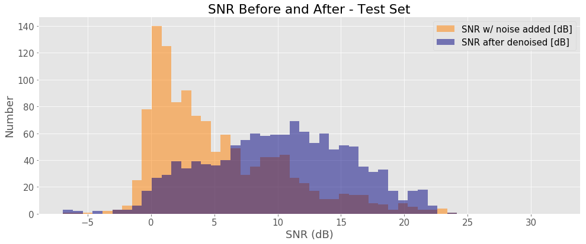
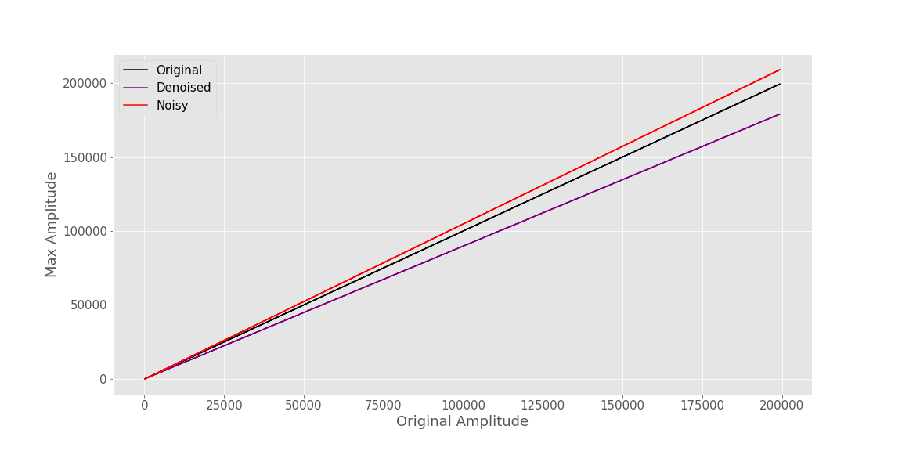
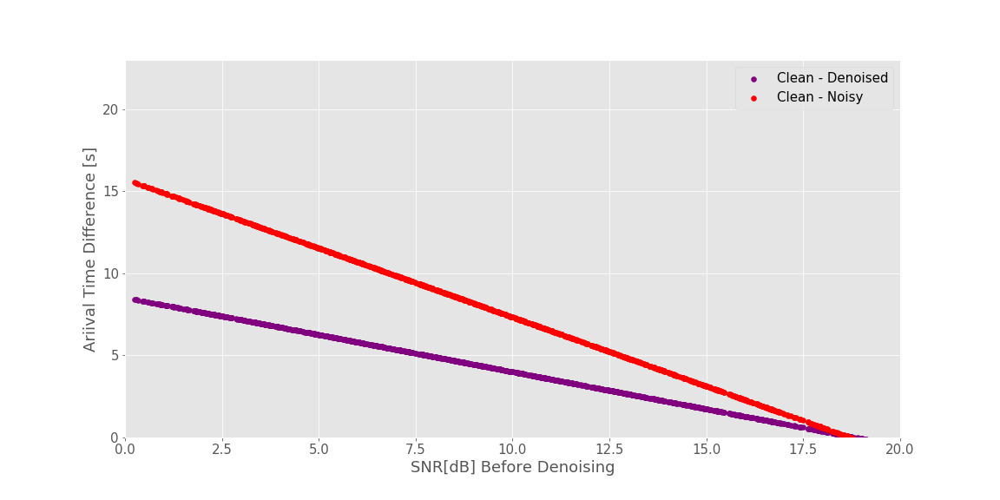

Removing Noise from Seismic Data with Denoising Autoencoders

To record these waves we use seismometers. Seismometers are highly sensitive instruments that typically measure translational ground motions. These instruments are sensitive enough to measure large, distant earthquakes from across the globe. For example, a seismometer in California can detect a magnitude 7.0 or above earthquake in Chile, Japan and/or even Turkey!
Given their level of sensitivity seismometers also pick up noise. This includes, but is not limited to: instrumental noise, changes in the Earth’s tides, pressure variations, and traffic. Seismologists therefore commonly apply filters to remove background noise, similar to what a sound-engineer does when recording live music. However, knowing which filter to apply is not intuitive. Also, applying a filter might remove relevant information from the signal if the noise is in the same frequency band as the signal itself.
Over the years there have been statistical efforts to remove noise without tampering the original signal. However, these methods usually require specifying some sort of variable threshold. Incorrectly picking this threshold can lead to false signals[5] [2].
Because of the nontrivial task of removing noise from seismic data, geophysicists are on the constant lookout for alternatives approaches. Ideally, a geophysicist would have a set of tools at their disposal that can remove noise from seismic data (or denoise) with minimal human intervention. Additionally, we hope that such a method increases the signal-to-noise ratio of the signal. For the above-mentioned reasons, geophysicists are investigating if deep neural networks can provide new insight and facilitate discoveries.
In this post, we will look into one approach in applying Deep Neural Networks to remove noise from seismic data.
Table of Contents
Understanding the Data
How can we do this? Before moving on the details, we first need to understand digital seismic data. Modern seismometers record the voltage required to recenter a displaced internal mass. A higher voltage means the mas needs to be “pushed” back further. In other words, the mass was significantly displaced by ground shaking. The voltage measured is recorded as a function of time (in seconds) or sample points (npts). This voltage corresponds to either velocity or acceleration.
Digital seismic data can be described as a discrete sum of several sinusoids — each with a unique peak amplitude, frequency, and a phase-lag relative alignment [6]. As a result, we can take advantage of tools commonly used for signal processing.
Typical audio signal processing includes: removing ambient noise, taking into account unequal distribution microphone recording, enhancing certain frequency bands and suppressing others, and so on. In recent years deep neural networks have been used to tackle some of these common processing tasks. You might have already come across these deep neural network algorithms in action if you have used applications with automated speech recognition(ASR) such as Amazon’s Alexa and Apple’s Siri.
Figure: Logos of Apple’s Siri [left] and Amazon’s Alexa [right]. Both speech recognition systems use deep neural networks for automated speech recognition(ASR).
Like seismic data, one of the challenges behind speech recognition is the presence of background noise, which convolutes the signal [3]. The challenge of removing noise (and thus improving the signal-to-noise ratio) in ASR parallels what the Seismological community faces when removing noise from seismic recordings. Instead of enhancing speech recordings, seismologists desire to enhance earthquake signals.
Model
Before deciding which architecture to use, we did some research on current practices both within and outside the geophysical community. We did this because a) the deep learning field is constantly changing so a popular algorithm today may be shown to be inefficient tomorrow (I am looking at you RNN), b) we want to learn from other people’s mistakes and c) we wanted our approach to be unique.
[5] approached the problem by first transforming their seismic data into the frequency domain and then using both the real and imaginary parts as input to a convolutional neural network. [3] developed a denoising method based on a parametric dictionary learning scheme. Dictionary learning is a branch of signal processing and machine learning which exploits underlying sparse structures of the input training data. With these sparse representations, they were able to capture the characteristics of seismic data that could then be used for denoising. [1] used a combination of a U-net and incorporating a pre-trained neural network known as ResNet34. In doing so they took advantage of the feature extracting capabilities of convolutional neural networks and the benefits of using pre-trained neural networks.
Autoencoders are a type of Convolutional Neural Network that are used for unsupervised learning. If trained reliably, an autoencoder takes an input, converts it to a lower dimension, reconstructs the original dimension, then outputs something that looks similar to its original input. Assuming the model is trained to recreate the input, the hidden layer “bottleneck” in the neural network forces the autoencoder to contain information needed to represent the input but at a lower dimension. This makes autoencoders power feature extractors.
 Figure: Denoising autoencoder model architecture used for training. The left portion (outlined in green on the top) depicts the encoder and the right portion (outlined in orange on top) is the decoder. If trained to reconstruct its input reliably, the coding (center dark blue block where the bottleneck occurs) can represent the input but at a lower dimension.
To prevent the autoencoder from trivially learning its input, the input is corrupted; thereby forcing the autoencoder to learn useful features. To reduce the corruption process, the neural network learns/captures the probabilistic distribution of the input. We call this type of autoencoder, where the input has been corrupted with noise added to it, denoising autoencoders.
We defined our denoising autoencoder with alternating convolutional and Max pooling layers for the encoder and alternating upsampling and convolutional layers for the decoder portion of the denoising autoencoders (DAE).
There no rules for knowing which hyperparameters to use for a given model. We obtained a ballpark idea of what types of parameters to use by reading literature about similar machine learning projects and through trial-and-error.
Pre-Processing
Given the rich history of earthquake monitoring in California, we were able to download seismic data from the Northern California Earthquake Data Center (NCEDC). We chose stations in Northern California that are known to have a high signal-to-noise ratio. We queried events located within a 300km radius around each station. This was done to limit the length of our input training data to five-minute records. We also set a minimum earthquake magnitude threshold so that the starting SNR was large enough to preserve the earthquake signal. With this criterion, we found approximately 10,000 unique station recordings within 18 years.
Each component of our records (Z, N, E) was treated as a “unique” instance. We thus expanded our training set by a factor of three, giving us approximately 30,000 training instances. Waveforms were detrended, high-passed filtered with a maximum frequency of 0.5Hz, and normalized. We then decimated our traces by a factor of two. This was done to reduce the number of parameters the machine learning algorithm would have to learn and work with during training.
Our denoising autoencoder needs two inputs: an input x and a corrupted version xx. To create a corrupted version xixi, we downloaded data between earthquake events from stations with poor SNR. We took this noise and added it to a copy of our pre-processed data. This left us with two versions: a clean version and a noisy/corrupted version. The noisy waveform and its associated original clean version are the input and label to our denoiser autoencoder, respectively.
Preliminary Results
To get a taste of our model’s performance we turned to the learning, sometimes called the loss, curve. With each epoch, the predictions made by the algorithm should improve, i.e. the cost should go down. The plot below shows our model’s current performance (as of 07.10.19).
 Figure: Loss curve computed for the training (red curve) and validation (blue curve) set during training from our denoising autoencoder model. Note how the model was stuck at a saddle point between epoch 15 - 210. Model training was terminated when the curves plateaued. This was done to prevent overfitting.
The cost for both the training and validation set decreased with each epoch. Our validation curve is nosier than our training curve which could suggest we need to modify our batch sizes or that the data within our validation set is semi-irregular and thus leads varying levels of loss per epoch. However, the fact the validation curve has a decreasing trend is promising. Note that the model was stuck at a saddle point about 15 – 210 epoch, thus making our model take longer to improve.
Learning curves give us insight into whether or not or model is learning, however, it doesn’t tell us much about the time-series output. The denoiser is spitting out waveforms that have (or should have) had noise removed.
If the noise has been removed, then we expect the signal-to-noise ratio to increase after the denoiser is applied. Let’s plots this. Below is the SNR before and after our denoiser is applied on the test set:
 Figure: Histogram of the signal-to-noise ratio of the the noisy/corrupted version (yellow) and the denoised version from our DAE (purple) using the pre-trained model on the test set.
Not bad! If we compare the SNR before and after running the model we can see that the mode goes from ~3dB to ~10dB. Very promising.
We need to talk about physics before we can celebrate. Seismic data is a means by which we can learn about the interior of the Earth. Thus, we need to check what, if any, of the underlying physics that created the waveforms were preserved from using our denoising autoencoder. Two metrics we can look at are changes in amplitude and changes in phase arrival times (i.e. the onset of the first and second wave arrivals).
Below we show the values of the peak (or max) amplitude of the waveforms as a function of their original amplitudes using a linear least-squares polynomial fit. The black curve shows the original amplitude and is used as a reference for us to compare how the amplitudes changed when we added noise (red line) and after it was denoised (purple). Looking at the plot we note that adding noise increases the peak amplitude values for the data set. We would hope to see that using the denoising autoencoder will restore the original amplitude and thus give us a linear trend with a similar slope as the original. However, it would seem that overall the DAE is unable to return the peak amplitude values as can be seen with the purple linear fit curve which has a slope less than one.
 Figure: Max amplitude of the waveforms as a function of their original amplitudes using a linear least-squares polynomial fit. The original, non-corrupted data (black curve), has a slope of 1 (since it is a function of itself). The red and purpled curves show the linear trend of the noisy input (red) and denoised (purple), respectively.
Let’s turn our attention to the arrival times of the first seismic wave, the P-wave. To find the p-wave arrival time we used and automated phase picker by Baer et. al on our three data sets: the original waveforms, the noisy (corrupted) waveforms, and the denoised waveforms. We then computed the difference in picked arrival times between the original and the denoised (purple) and the original and the corrupted/noisy waveforms (red line). The results are shown below.
 Figure: Difference in picked arrival times between the original and the denoised (purple) and the original and the corrupted/noisy waveforms (red line). A linear least-squares polynomial was used to fit the data.
Once again we use linear least-squares polynomial to fit our data and plot it as a function of the SNR before denoising. Though the automated phase picker is not picking the same p-wave arrival as the uncorrupted version (if this was the case the purple line would have a slope of 0), it does, however, pick p-arrivals closer to the true value (as we can see by the smaller differences in arrival time).
This is where our model currently stands. We have a few items on our to-do list which we think can help our model. We will go over some possible routes in the next section.
Future Work
One of the first items on our to-do list is to check whether data augmentation will help our model reach lower cost values and/or converge more quickly. One option could be to modify the noise levels adding to our waveforms. While the information gain won’t be as significant as using new and unique data, it should nonetheless improve the model.
Expanding our training data set (either by data augmentation or downloading data from other stations) would motivate us to train a model with more hidden layers. It might very well be that a larger data set does a better job of describing the statistical variation in the entire sample space.
From a geophysicist’s point of view, there are still a lot of questions that need to be answered. And, from the broader science point of view, there remain questions of what role Machine Learning should have in advancing scientific exploration in the physical sciences. As of writing this post, Deep Neural Networks are showing promising preliminary results. How we evaluate them, how we ensure reproducibility, etc. are topics that remain to be explored and answered.
References
[1] Alan Richardson and Caelen Feller. “Seismic data denoising and deblending using deep learning”. (2019).
[2] Li-ping Zhang et al. “Seismic Signal Denoising and Decomposition Using Deep Neural Networks”. In: International Journal of Petrochemical Science & En- gineering (2017).
[3] Lingchen Zhu, Entao Liu, and James H. McClellan. “Seismic data denoising through multiscale and sparsity-promoting dictionary learning”. In: Geo- physics 80 (2015).
[4] Mike Kayser and Victor Zhong. “Denoising Convolutional Autoencoders for Noisy Speech Recognition”.
[5] Weiqiang Zhu and Gregory C. Beroza. “PhaseNet: A Deep-Neural-Network-Based Seismic Arrival Time Picking Method”. In: Geophysics Journal Inter- national 216 (2018), pp. 261-273.
[6] Öz Yilmaz. “Introduction to fundamentals of signal processing”. (2001) https://wiki.seg.org/wiki/Introduction_to_fundamentals_of_signal_processing
Noah Luna
Recent MS Graduate Student
My research interests include applications of deep neural networks in seismology, theoretrical frameworks of deep neural networks, seismic sources, and time-series analysis.